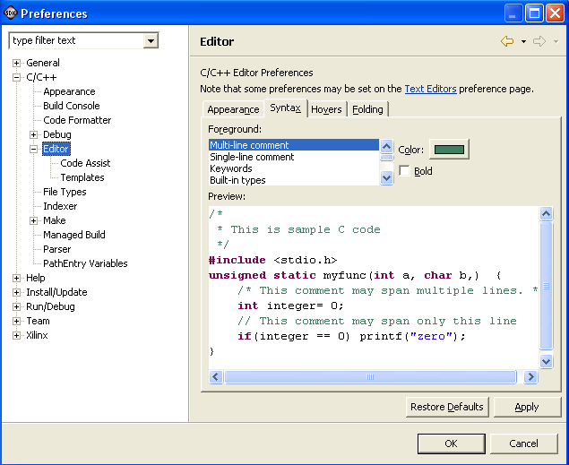

Color preferences
You can customize the appearance of the C/C++ editor on the Colors page of the Preferences window.

- Foreground
- Lists items, such as comments, keywords, and strings,
for which you can specify a color.
- Color
- Specifies the color in which to display the selected
item.
- Bold
- Makes the selected item bold.

Coding aids

Customizing the C/C++ editor

C/C++ editor preferences